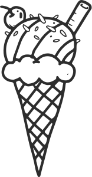

Volume One · 2020 to 2022
The Long Way Round
Safe travel through a pandemic limited where we could go, and then, slowly, it didn't. Twenty-nine chapters, four return trips to Beacon, one fire tower climbed two flights and abandoned. Everything after the wedding is in Volume Two, one page for each year.

These trips are just a beginning.
Thank you, guests. Thank you, bear friends, best friends, and family. There will be so many more places to see.